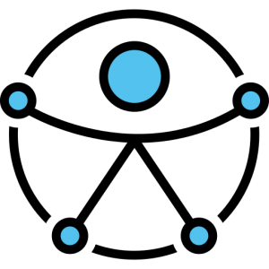
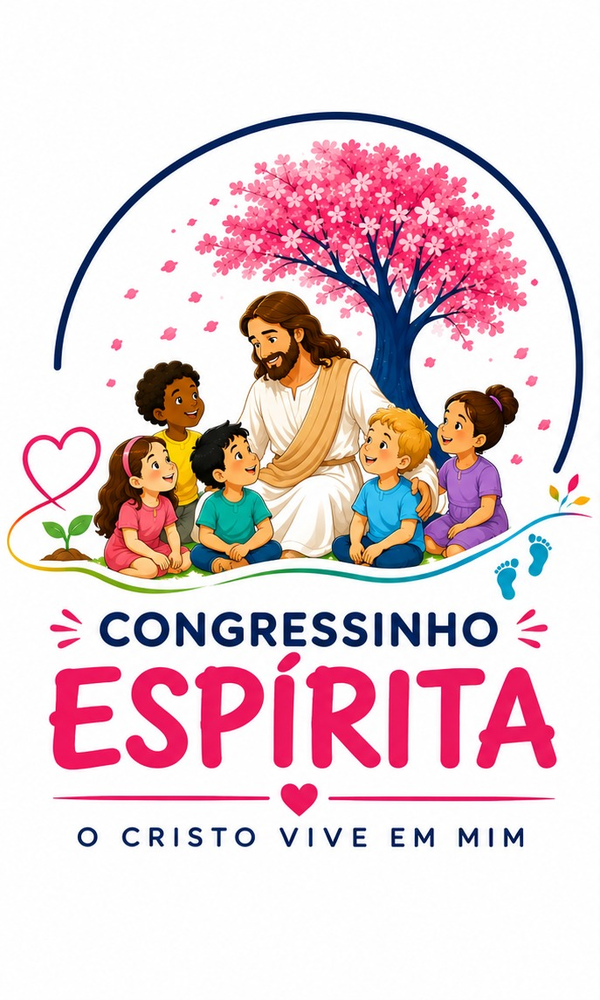
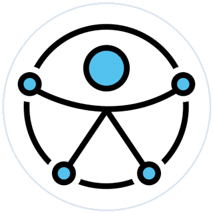

43º Congresso Espírita de Goiás
Conferências com grandes oradores nacionais, mesas redondas, arte espírita e reflexões profundas sobre os caminhos da alma à luz do Evangelho e do Espiritismo.
Local: Centro de Convenções de Goiânia
“O Cristo vive em mim”
O Congresso Espírita de Goiás é um só encontro para toda a família! Enquanto jovens e adultos vivenciam suas programações, o Congressinho acolhe as crianças com carinho, alegria, arte e vivências práticas dos ensinamentos de Jesus.

Perspectiva Inclusiva FEB
Integração Familiar
A Federação Espírita do Estado de Goiás pensou o evento de forma integrada. Cada integrante da família tem seu espaço preparado com carinho e dedicação doutrinária.
Conferências com grandes oradores nacionais, mesas redondas, arte espírita e reflexões profundas sobre os caminhos da alma à luz do Evangelho e do Espiritismo.
Local: Centro de Convenções de Goiânia
Espaço de encontro, troca e protagonismo da mocidade espírita. Música, debates, oficinas e integração na linguagem dinâmica e afetuosa da juventude.
Saiba mais: cjovem.feego.org.br
Evangelização viva, lúdica e sensível. Atividades pedagógicas, contação de histórias, música, brincadeiras integrativas e convivência que semeiam o amor cristão.
Locais: Lar Francisca de Lima & Centro de Convenções
Atenção Pais e Responsáveis
Para que você possa planejar com antecedência e tranquilidade a inscrição da sua criança, reunimos aqui a estrutura de dias e os espaços onde as atividades acontecerão.
Uma equipe de evangelizadores e monitores estará no Centro de Convenções de Goiânia para dar suporte aos pais e responsáveis que desejarem assistir à conferência de abertura do Congresso com tranquilidade.
No domingo e na segunda-feira, 07 e 08 de fevereiro, toda a programação rica do Congressinho acontecerá na estrutura acolhedora do Lar Francisca de Lima, com salas divididas por faixa etária, área verde, momentos de lanche, música, oficinas de expressão artística e estudo evangélico adaptado à infância.
Na segunda-feira, ao final das atividades no Lar Francisca de Lima, as crianças subirão ao palco principal do Centro de Convenções de Goiânia para realizar uma apresentação especial para todos os congressistas, simbolizando os frutos de amor semeados durante os dias de convivência.
Significado
Criada com a sensibilidade de expressar o tema “O Cristo vive em mim”, a identidade do Congressinho reúne quatro elementos fundamentais da evangelização infantil.
A mensagem de Jesus plantada desde cedo nos corações puros da infância, pronta para brotar através dos bons sentimentos e das ações generosas.
As pequenas pegadas que mostram os passos da criança na direção do bem, aprendendo a caminhar com fraternidade, paciência e solidariedade.
O afeto acolhedor do Evangelho. No Congressinho, cada criança é ouvida, abraçada e respeitada em sua singularidade e em seu tempo de florescer.
A árvore florida que dá sombra, beleza e frutos. Representa o crescimento espiritual contínuo alimentado pela convivência familiar e evangélica.

AcessibilidadeDiretrizes da Federação Espírita Brasileira
Em alinhamento à perspectiva inclusiva que vem sendo trabalhada pela Federação Espírita Brasileira (FEB), o Congressinho Espírita assume o compromisso de preparar ambientes que promovam a plena acessibilidade, o respeito às neurodivergências e o suporte carinhoso a crianças com necessidades educacionais e de locomoção específicas.
Tire suas dúvidas
As inscrições são feitas de forma centralizada pelo portal oficial do evento em evento.digital/feego/43cego. Na plataforma de inscrição, basta selecionar a opção do Congressinho Espírita e preencher os dados do responsável e da criança.
O Congressinho conta com uma equipe dedicada de evangelizadores espíritas capacitados, educadores e monitores de apoio da FEEGO, com experiência no cuidado amoroso e responsável com a infância.
A organização planeja momentos de lanche adequados à rotina infantil. Caso sua criança possua alergias, intolerâncias alimentares ou restrições específicas, isso poderá ser indicado na ficha de saúde durante a inscrição.
O transporte das crianças do Lar Francisca de Lima até o Centro de Convenções de Goiânia na segunda-feira é de responsabilidade exclusiva dos pais ou responsáveis legais. O horário exato de chegada para organização será comunicado pela coordenação com antecedência.
Inscrições Abertas
Proporcione dias inesquecíveis de amizade, aprendizado do Evangelho e amor fraterno. Vagas limitadas para acolher cada criança com toda a atenção e segurança que ela merece.
Fazer inscrição da criançaDúvidas sobre o Congressinho
A equipe da FEEGO e a coordenação da evangelização infantil estão à disposição para esclarecer qualquer dúvida sobre o Congressinho.
(62) 3281-0200 (62) 99348-1215 (WhatsApp) secretaria.congresso@feego.org.br Segunda a sexta-feira, das 8h às 17h